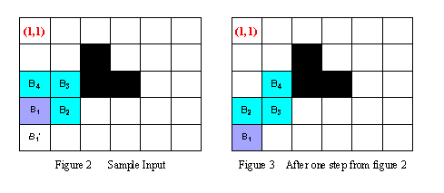

Home Page
F.A.Qs
Statistical Charts
Past Contests
Scheduled Contests
Award Contest
| Online Judge | Problem Set | Authors | Online Contests | User | ||||||
|---|---|---|---|---|---|---|---|---|---|---|
| Web Board Home Page F.A.Qs Statistical Charts | Current Contest Past Contests Scheduled Contests Award Contest | |||||||||
|
Language: Holedox Moving
Description During winter, the most hungry and severe time, Holedox sleeps in its lair. When spring comes, Holedox wakes up, moves to the exit of its lair, comes out, and begins its new life.
Holedox is a special snake, but its body is not very long. Its lair is like a maze and can be imagined as a rectangle with n*m squares. Each square is either a stone or a vacant place, and only vacant places allow Holedox to move in. Using ordered pair of row and column number of the lair, the square of exit located at (1,1). Holedox's body, whose length is L, can be represented block by block. And let B1(r1,c1) B2(r2,c2) .. BL(rL,cL) denote its L length body, where Bi is adjacent to Bi+1 in the lair for 1 <= i <=L-1, and B1 is its head, BL is its tail. To move in the lair, Holedox chooses an adjacent vacant square of its head, which is neither a stone nor occupied by its body. Then it moves the head into the vacant square, and at the same time, each other block of its body is moved into the square occupied by the corresponding previous block. For example, in the Figure 2, at the beginning the body of Holedox can be represented as B1(4,1) B2(4,2) B3(3,2)B4(3,1). During the next step, observing that B1'(5,1) is the only square that the head can be moved into, Holedox moves its head into B1'(5,1), then moves B2 into B1, B3 into B2, and B4 into B3. Thus after one step, the body of Holedox locates in B1(5,1)B2(4,1)B3(4,2) B4(3,2) (see the Figure 3). Given the map of the lair and the original location of each block of Holedox's body, your task is to write a program to tell the minimal number of steps that Holedox has to take to move its head to reach the square of exit (1,1).  Input The input consists of several test cases. The first line of each case contains three integers n, m (1<=n, m<=20) and L (2<=L<=8), representing the number of rows in the lair, the number of columns in the lair and the body length of Holedox, respectively. The next L lines contain a pair of row and column number each, indicating the original position of each block of Holedox's body, from B1(r1,c1) to BL(rL,cL) orderly, where 1<=ri<=n, and 1<=ci<=m,1<=i<=L. The next line contains an integer K, representing the number of squares of stones in the lair. The following K lines contain a pair of row and column number each, indicating the location of each square of stone. Then a blank line follows to separate the cases.
The input is terminated by a line with three zeros. Note: Bi is always adjacent to Bi+1 (1<=i<=L-1) and exit square (1,1) will never be a stone. Output For each test case output one line containing the test case number followed by the minimal number of steps Holedox has to take. "-1" means no solution for that case. Sample Input 5 6 4 4 1 4 2 3 2 3 1 3 2 3 3 3 3 4 4 4 4 2 3 1 3 1 4 2 4 4 2 1 2 2 3 4 4 2 0 0 0 Sample Output Case 1: 9 Case 2: -1 Hint In the above sample case, the head of Holedox can follows (4,1)->(5,1)->(5,2)->(5,3)->(4,3)->(4,2)->(4,1)->(3,1)->(2,1)->(1,1) to reach the square of exit with minimal number of step, which is nine.
Source |
[Submit] [Go Back] [Status] [Discuss]
All Rights Reserved 2003-2013 Ying Fuchen,Xu Pengcheng,Xie Di
Any problem, Please Contact Administrator